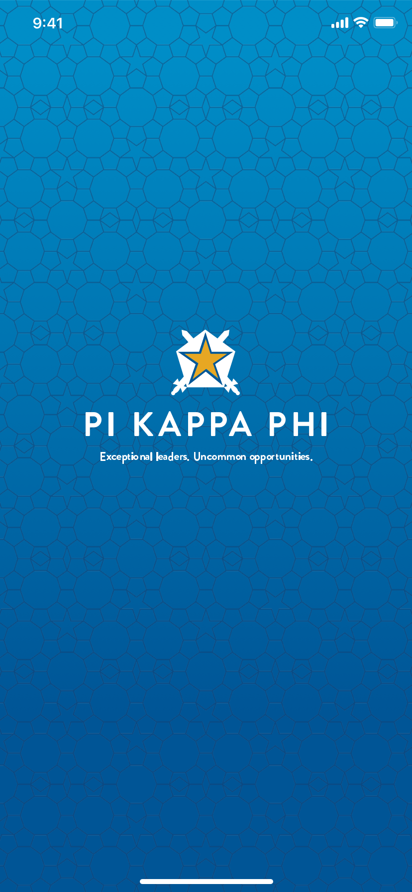
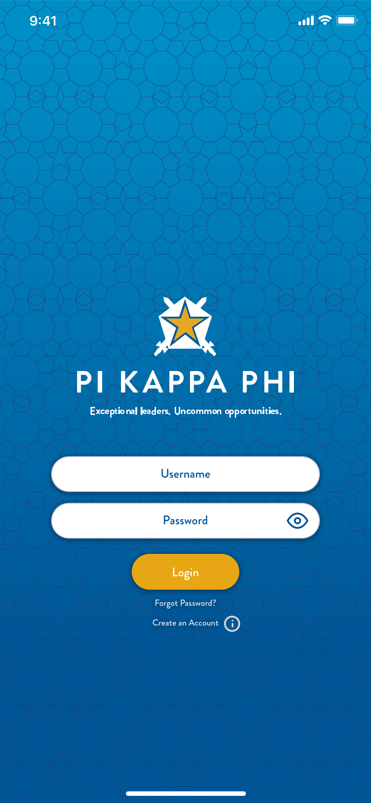
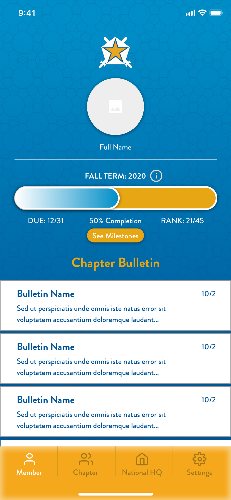
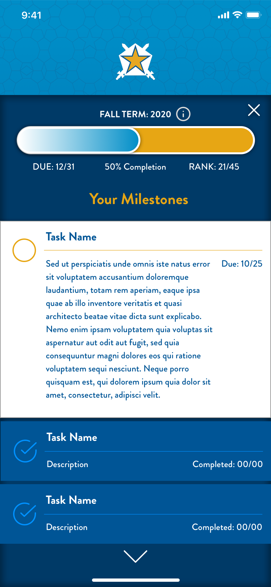
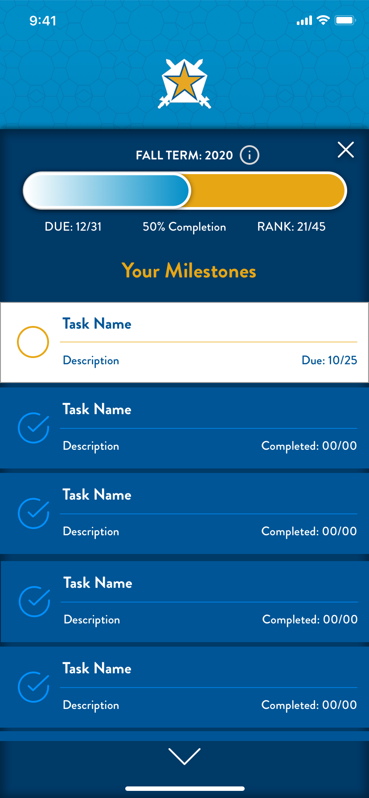
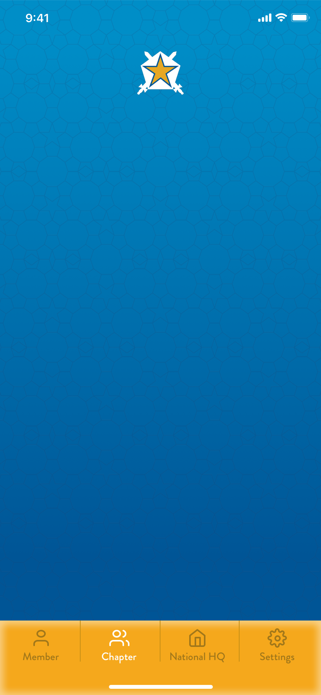

Design
ConceptPi Kapp
App
A mobile concept for helping fraternity members keep track of milestones and stay connected to the organization.
Every year looked a little different. The same stuff still had to get done.
Students already had a lot to keep up with: college, financial responsibilities, fraternity milestones, and the systems around them. As Pi Kapp's lead designer and Assistant Executive Director of Communications, I explored whether one mobile experience could make the member side easier to follow.

I reviewed the resources we already had, including recruitment guides, and spoke with new graduate recruiters, students, executive board members, and chapter administrators. I also drew on my own experience inside the organization.
The same issues kept coming up: information was spread across tools, and the member experience became harder to follow whenever another system entered the mix.
This was an exploratory concept informed by internal conversations. I didn’t conduct a formal usability study.
Starting out · Associate member
Associate member
Find the first milestones and understand what comes next.
What do I need to do?Helping run it · Chapter secretary
Chapter secretary
Keep up with personal progress while helping the chapter stay organized.
What needs attention?Finishing the year · Graduating senior
Graduating senior
See what is finished, what is left, and how to stay connected.
What is still left?
There was already a system. It was just spread everywhere.
Chapter work moved through spreadsheets, Drive folders, PDFs, documents, financial tools, and the existing gateway. I was not trying to replace all of it. I wanted the member-facing part to feel more like one place.
I sketched the main surfaces first, then mapped the content into four destinations: Member, Chapter, National HQ, and Settings.
The member view held personal progress and chapter updates. The other tabs kept chapter standing, national information, and account details nearby without making the dashboard do everything.
About the integrations: I planned around tools Pi Kapp already used, including iMIS and OmegaFi. I did not build or test those connections.

The first app established the member flow.
These original V1 exports preserve the first member flow as it was presented in 2020.
Original concept sequence
Open with the original identity.
The launch state introduced the star-and-swords mark on the original cyan field.






Chapter 04
V2 carries the original app forward.
The later V2 study revisits the original member flow with a navy-and-gold palette and updated typography, spacing, and controls.
The six screens below show that direction.
Hierarchy
Tighter type and spacing make responsibilities easier to scan.
Navigation
The updated navigation uses Today, Chapter, Support, and You.
States
Status, source, and next actions are separated more clearly.
Continuity
The star-and-swords mark connects the updated screens to the original identity.


Illustrative concept screens. Names, dates, rankings, and activity are fictional.
A formative project that changed how I approached product design.
This project connected my experience in leadership and communications with a growing interest in product design and research. It was an early attempt to make HQ feel closer to day-to-day chapter life through one member-facing app.
The concept still needed usability testing and a clearer integration model. What stayed with me was the approach: start with the systems people already use, then make the member-facing experience easier to understand.